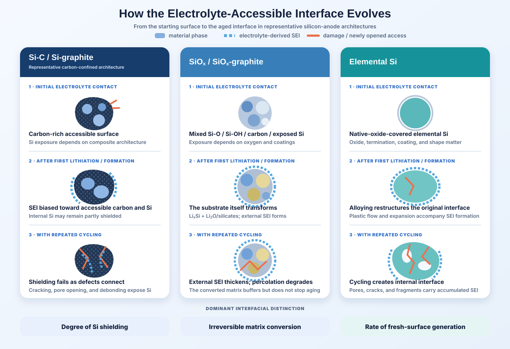
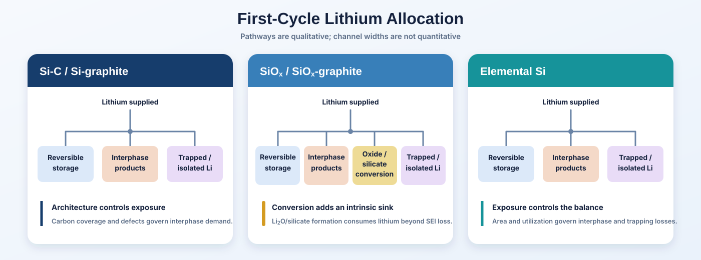
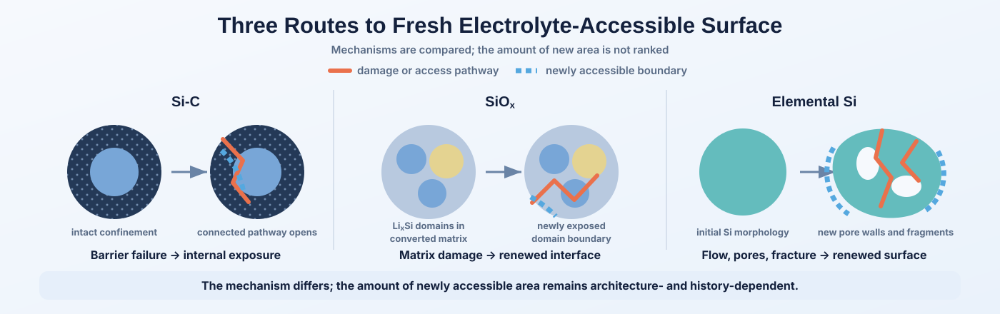
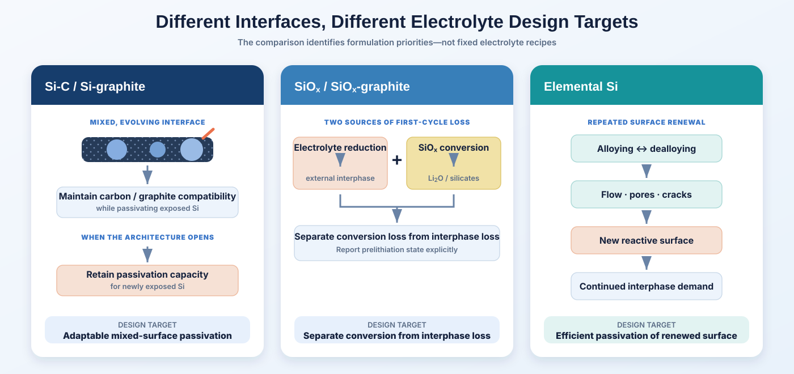
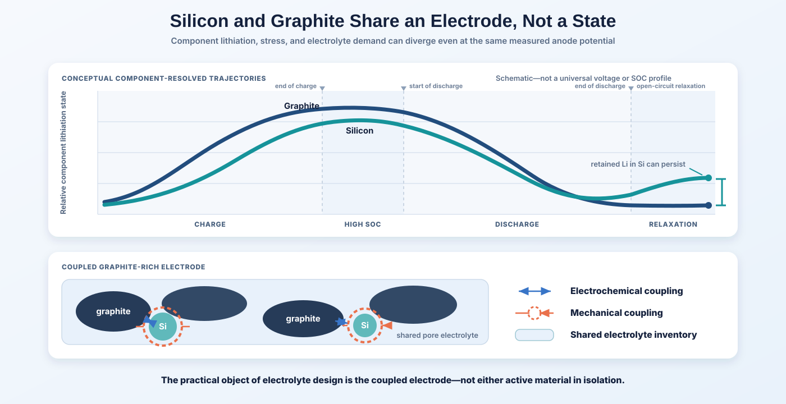

“Silicon anode” describes a family of materials, not a single electrochemical interface. A silicon-carbon composite, SiOx particle, and elemental Si particle may all ultimately store lithium through Li-Si alloying, yet the electrolyte initially encounters very different surfaces.
In Si-C materials, much of the silicon may be shielded by carbon, graphite, or a secondary-particle structure. In SiOx, lithiation transforms an oxygen-containing matrix while consuming lithium to form partly irreversible Li2O and lithium-silicate phases. Elemental Si begins much closer to the alloying-active material itself, but its accessible surface can change dramatically as the silicon expands, fractures, restructures, and repeatedly exposes fresh interface.
The important distinction is therefore not simply how much silicon an electrode contains. It is what surface is accessible to the electrolyte, what first lithiation does to that surface, and how rapidly new reactive area is generated during subsequent cycling.
These differences help explain why electrolyte strategies developed for one silicon material cannot automatically be transferred to another. They affect first-cycle lithium loss, SEI location and composition, electrolyte consumption, impedance growth, and the need for interphase repair during cycling.
Published head-to-head comparisons under fully matched particle size, accessible surface area, silicon-derived capacity, binder, loading, graphite fraction, formation protocol, electrolyte quantity, and cathode conditions appear to remain scarce.[1] This article therefore compares the interface presented before cycling, the irreversible transformation produced during first lithiation, and the mechanisms by which fresh surface becomes available afterward.
1. Si-C, SiOx, and Elemental Si Describe Different Material Attributes
These three labels do not describe equivalent material categories. Si-C primarily describes an architecture, SiOx a starting chemistry, and elemental Si a composition whose atomic order and morphology must be specified separately.
Si-C is an architecture, not one composition
Si-C may describe carbon-coated Si, Si dispersed within carbon, porous Si/C secondary particles, Si deposited on graphite, or a Si/C additive subsequently blended with graphite. Carbon may provide electronic continuity, internal void space, mechanical confinement, and an electrolyte-facing surface on which much of the initial SEI forms.
The critical variable is not simply silicon content, but how much silicon surface is accessible to the electrolyte. Two powders with the same Si wt% can present very different reactive areas depending on carbon coverage, porosity, defects, and electrolyte penetration.[2]
SiOx becomes a new composite during first lithiation
SiOx contains Si-rich and oxygen-rich environments. During early lithiation, it forms active LixSi together with Li2O and lithium-silicate phases. The extent and products of this transformation depend on oxygen content and starting microstructure. These oxide-derived products consume cyclable lithium and lower initial Coulombic efficiency, but they can also separate active Si domains and contribute internal mechanical buffering.[3]
The electrochemically operating material is therefore no longer simply the starting SiOx powder. It becomes a heterogeneous LixSi/oxide/silicate composite that coexists with an electrolyte-derived external interphase. Oxygen content also changes transport, kinetics, and volume-change behavior rather than merely diluting silicon capacity, as direct Si-versus-SiO comparisons have shown.[4]
Elemental Si can be crystalline or amorphous
“Amorphous” describes atomic order, not electrode architecture. Amorphous Si may be nanoscale or microscale, dense or porous, coated or uncoated. It avoids the initial crystalline-to-amorphous reaction-front geometry of crystalline Si, but not large alloying strain, plastic flow, pore evolution, lithium trapping, or electrical isolation.
For electrolyte behavior, particle size, geometry, constraint, coating, and accessible surface area can matter as much as starting crystallinity.[5]
| Attribute | Si-C / Si–graphite | SiOx / SiOx–graphite | Elemental Si |
|---|---|---|---|
| What the term defines | Composite architecture | Oxygen-containing silicon chemistry | Elemental composition; crystallinity must be specified separately |
| Representative starting structure | Si associated with carbon and often graphite | Si-rich domains within an oxygen-containing matrix | Crystalline or amorphous Si, with optional coatings or carbon |
| Initial electrolyte-facing surface | Carbon, graphite, binder, defects, native oxide, and exposed Si | Si-O/Si-OH environments, carbon or coating, binder, and exposed Si | Native oxide and Si, plus any deliberate coating, carbon, or binder |
| What first lithiation fundamentally changes | Si alloys while the surrounding architecture may remain partly intact | Starting SiOx converts into a LixSi + Li2O/lithium-silicate-rich composite | Elemental Si alloys and undergoes major structural rearrangement |
These distinctions matter because the electrolyte interacts not with a nominal silicon label, but with the accessible surface and transformed structure that each material actually presents during cycling. The next sections compare those interfaces directly.
2. What the Electrolyte Actually Sees
The relevant interface is not fixed by the material label. It evolves as electrolyte penetrates defects, silicon alloys and restructures, carbon confinement fails, and new internal surface becomes accessible. The three material classes therefore differ not only in their starting chemistry, but also in how the electrolyte-accessible interface changes with cycling.

Si-C: an outer carbon surface until the architecture opens
In a well-coated or confined Si-C architecture, early electrolyte reduction may occur mainly on graphitic or amorphous carbon, oxygen-containing defects, binder, and whatever Si or native oxide remains exposed through incomplete coverage. During cycling, however, shell cracking, pore opening, or interfacial debonding can allow liquid electrolyte to reach previously shielded Si.
The relevant variable is therefore not simply whether carbon is present, but how much Si surface the electrolyte can access before and after mechanical degradation.
SiOx: an oxide-rich starting surface and a transformed internal matrix
Before formation, the electrolyte may contact Si-O-Si, Si-OH, defective oxide, carbon coatings, and locally exposed Si. First lithiation then changes the material itself: active LixSi forms alongside Li2O- and lithium-silicate-rich regions, while an electrolyte-derived SEI develops at accessible external surfaces.
With continued cycling, that external interphase can thicken, extend into, and progressively alter the available pore structure. Three-dimensional microscopy of SiOx electrodes has revealed a relatively dense outer SEI and a less compact inner region, together with progressive disruption of electronic percolation.[6]
Elemental Si: native oxide first, restructured Si later
Uncoated elemental Si initially presents a native-oxide-covered Si surface, together with whatever binder and conductive carbon are exposed in the electrode. Alloying and dealloying then restructure that interface through plastic flow, pore formation, cracking, fragmentation, and electrical isolation.
The aged interface can therefore contain extensive internal SEI-coated surface that did not exist in the pristine electrode. Microscopy of micrometer-scale Si, for example, has revealed thread-like Si-rich structures embedded within accumulated SEI after repeated cycling.[7]
3. A More Useful Framework: Lithium Loss, Surface Renewal, and Electrolyte Inventory
Material labels alone do not determine electrolyte demand. A more useful comparison asks three questions: how much lithium is irreversibly consumed, how rapidly new reactive surface is generated, and how much electrolyte inventory is available to sustain that evolving interface.
A. Irreversible lithium demand
Conceptual accounting only. The terms are not uniquely separable experimentally and can overlap depending on the diagnostic definition.
All three material classes consume lithium through electrolyte reduction and can retain lithium in kinetically trapped or electronically isolated regions. SiOx adds a distinctive oxide-conversion contribution: lithium is consumed as the starting oxygen-containing structure is transformed into Li2O- and lithium-silicate-rich phases. Electrolyte optimization can reduce parasitic interphase formation, but it cannot remove this materials-level conversion requirement. Prelithiation can compensate the inventory loss, but it does not make the underlying transformation disappear.

B. Newly accessible surface per cycle
Descriptor: ΔAaccess denotes the incremental surface that becomes newly reachable by liquid electrolyte over a specified cycling interval.
This is a conceptual descriptor rather than a standardized experimental metric. In Si-C, a connected crack or pore can breach carbon confinement and expose internal Si. In SiOx, matrix restructuring, localized cracking, or debonding can renew access to active-domain boundaries. In elemental Si, plastic flow, pore formation, fracture, and fragmentation can create internal surface.

C. Electrolyte inventory per evolving interface
Electrolyte quantity is commonly normalized to cell capacity, but silicon-rich electrodes introduce another relevant scale: the amount of electrolyte—and of specific reactive additives—available relative to the interface that must be formed and repeatedly repaired. Equal liquid volumes can contain different salt, solvent, and additive inventories, so electrolyte volume alone is not the controlling descriptor.
This relationship is history-dependent rather than a simple area ratio. Surfaces can passivate, close, reconnect, become inaccessible, or rupture repeatedly at the same location. Bulk Si wt%, BET area, and E/C ratio therefore remain useful but incomplete descriptors; interpretation should also consider additive concentration, formation history, and the evolving electrolyte-accessible interface.
4. What Does This Mean for Electrolyte Design?
The dominant electrolyte-design problem changes with the surface and transformation pathway presented by each material.
Si-C: maintain compatibility with a mixed, evolving interface
In Si-C and Si–graphite electrodes, the formulation must serve both the initial carbon-rich interface and any Si-rich surface exposed as confinement degrades. Additive demand therefore depends on coating integrity, porosity, accessible area, silicon utilization, graphite fraction, and electrolyte inventory rather than silicon content alone.
Design priority: preserve carbon/graphite compatibility while retaining the ability to passivate newly exposed Si.
SiOx: distinguish matrix-conversion loss from interphase loss
SiOx consumes lithium through electrolyte-derived interphase formation and through conversion of its oxygen-containing structure. Electrolyte optimization can reduce the former; prelithiation can compensate part of the latter, but also changes the material state presented to the electrolyte. Its state and extent should therefore be reported as part of interfacial design.
Design priority: control the external interphase while separately accounting for intrinsic oxide-conversion lithium demand.
Elemental Si: reduce the cost of repeated surface renewal
For elemental Si, a successful formulation must do more than form a favorable initial interphase. It must sustain repeated passivation as flow, pores, cracks, and restructuring create new surface—without excessive additive depletion, solvent consumption, gas evolution, impedance growth, or isolation. Particle size, morphology, loading, pressure, and electrode architecture determine the severity of this demand.
Design priority: minimize the chemical and transport penalty associated with continuously renewed Si surface.

FEC illustrates the limits of formulation transfer
FEC illustrates the limit of formulation transfer. Studies on amorphous-Si model electrodes show that it can alter interphase chemistry, thickness, LiF-containing and polymeric products, and cycling behavior.[8][9] The effective dose in a practical electrode still depends on passivated area, surface-renewal rate, electrolyte inventory, and competing graphite requirements—not silicon wt% alone.
Promising strategies target different mechanisms
Selective modification or removal of unstable interphase material, strategies intended to reduce direct solvent contact with Si, alternative cyclic additives, and gel-polymer electrolytes have each shown promise in specific silicon systems.[10][11][12][13] Together they define mechanistic design directions, while matched cross-material validation remains limited.
Several comparative questions remain open: how rapidly electrolyte access increases after carbon confinement fails; which external interphase chemistries best stabilize transformed SiOx; and which formulations minimize the cost of continuously generated surface in practical elemental-Si electrodes. Answering them requires matched particle, electrode, electrolyte, formation, and full-cell conditions.
5. In Practical Anodes, Silicon and Graphite Do Not Behave Independently
Most commercial or near-commercial silicon anodes are not silicon-only electrodes. Si-C and SiOx are commonly introduced into graphite-rich electrodes, where the two active components share current, lithium inventory, pore space, binder, conductive pathways, and mechanical constraint. The electrolyte therefore interacts with a coupled composite electrode, not with an isolated silicon material.
One electrode potential does not imply one component state
Silicon and graphite differ in lithiation potential, kinetics, hysteresis, relaxation behavior, and transport limitation. Their relative contributions can therefore shift continuously during charge and discharge even though the external circuit reports only one anode voltage.
Moon and co-workers directly demonstrated this coupling in Si–graphite electrodes, observing progressive lithium accumulation in silicon, altered graphite utilization, and mechanical suppression of graphite capacity as silicon expansion increased.[14] The broader implication is that component-level states can diverge within a nominally uniform electrode. The surface experiencing the strongest reduction conditions, the region undergoing the greatest dimensional change, and the component retaining lithium most strongly need not remain the same throughout cycling.
Silicon expansion changes the environment experienced by graphite
Silicon expansion is not mechanically confined to the silicon particle. Within a dense composite electrode, swelling can change local contact pressure, pore geometry, tortuosity, binder strain, graphite-particle contact, and electrolyte transport pathways. Interphase growth on silicon can further occupy pore volume and restrict ionic access, suppressing graphite utilization even when graphite surface chemistry remains acceptable.

Electrolyte optimization becomes a multi-interface problem
Graphite constrains the range of formulations that can be judged successful. A solvent or solvation structure that limits reaction at Si may still be unacceptable if it co-intercalates into graphite or slows graphite desolvation and intercalation. An aggressive additive concentration may improve Si passivation yet increase graphite impedance. A thick or poorly Li+-conducting inorganic-rich interphase may protect Si while penalizing electrode rate capability.
The electrolyte and its finite additive inventory must therefore serve both interfaces. A formulation that improves silicon retention while substantially reducing graphite utilization, pore transport, or full-cell efficiency has not necessarily improved the practical electrode.
6. What the Existing Evidence Really Allows Us to Compare
Existing evidence distinguishes the dominant physical problems associated with Si-C, SiOx, and elemental Si, but does not yet identify broadly transferable electrolyte optima for each class.
6.1 What is well established
Well established: carbon architecture controls electrolyte access in Si-C; SiOx introduces a distinct oxide-conversion pathway; crystallinity alone does not determine elemental-Si architecture; and Si–graphite electrodes exhibit coupled electrochemical and mechanical behavior.[2][3][4][5][6][7][14]
6.2 What is strongly suggested
A single FEC concentration is unlikely to remain optimal as accessible Si area, graphite fraction, oxygen content, loading, electrolyte quantity, and formation change. An electrode that continually generates fresh Si surface should also consume finite interphase-forming inventory more rapidly than one that maintains effective confinement, all else equal. Because SiOx additionally spends lithium on matrix conversion, it is likely to require a different balance among lithium compensation, external-interphase control, and impedance management. The magnitude of each effect remains cell- and architecture-dependent.
6.3 What remains genuinely unresolved
What remains unresolved is not whether these silicon interfaces differ, but which electrolyte response is intrinsically preferable for each class once electrode variables are properly matched. It is not yet clear whether LiF-rich, borate-rich, phosphate-rich, sulfur-rich, or polymer-rich interphases map reproducibly onto one material class; whether HCE, LHCE, or weakly solvating systems provide systematically greater benefit when surface renewal is high; or whether carbon-confined Si benefits more from long-lived additive inventory than from aggressive initial passivation.
A related methodological question is how additive dosage should be normalized against a dynamic interface rather than nominal Si wt%. Answering it requires measurements that connect initial accessible area, fresh-surface generation, interphase growth, additive depletion, swelling, and impedance under the same cell conditions.
A minimum framework for comparable studies
A material-to-electrolyte claim is only as meaningful as the variables held constant around it. Before results are attributed to silicon material identity, the following layers should be matched, explicitly normalized, or reported well enough to isolate their influence.
| Comparison layer | Variables to match, normalize, or report | Why they matter |
|---|---|---|
| Active material | Si chemistry and oxygen content; Si-derived capacity; particle-size distribution; crystallinity; coating and composite architecture | Defines transformation pathway, capacity basis, and mechanical response |
| Starting interface | Accessible area; carbon coverage and defects; native oxide; surface termination; porosity and electrolyte penetration | Sets the initial area and chemistry presented to electrolyte |
| Electrode architecture | Graphite fraction and morphology; binder; conductive carbon; loading; density; porosity; thickness and pressure | Controls current sharing, transport, constraint, and surface access |
| Lithium and cell balance | Prelithiation state; cathode chemistry; N/P ratio; areal capacity; initial lithium inventory | Separates material loss from inventory compensation and full-cell limitation |
| Electrolyte inventory | E/C or electrolyte mass; salt, solvent, and additive concentrations; separator uptake and wetting | Determines the reactive inventory available per capacity and interface |
| Protocol | Formation sequence; voltage limits; current density; rest periods; temperature; stack pressure; cycle endpoint | Changes reaction distribution, interphase formation, and measured retention |
| Dynamic interface | Fresh-surface generation; interphase thickness and impedance; additive depletion; gas, swelling, isolation, and pore evolution | Tests whether the electrolyte remains effective after the pristine surface disappears |
Used together, these layers distinguish a material effect from changes in architecture, inventory, protocol, or interfacial history.
7. Conclusion: “Silicon Anode” Is Not Yet a Sufficient Electrolyte Specification
The important variable is not simply silicon content, but interface trajectory. Si-C, SiOx, and elemental Si differ in how electrolyte access is established, how lithium is irreversibly consumed, and how fresh interface emerges during cycling.
Those differences create three coupled demands: irreversible lithium consumption, new surface requiring passivation, and the reactive electrolyte inventory remaining to sustain that process. Electrolyte performance should therefore be interpreted against material architecture, accessible surface, graphite contribution, first-cycle transformation, and dynamic surface renewal.
The next useful step is matched experimentation that controls silicon-derived areal capacity, graphite fraction, particle scale, electrode architecture, electrolyte quantity, formation, and full-cell balance while tracking irreversible lithium loss, interphase evolution, and newly accessible surface. This approach can separate electrolyte effects associated with material identity from those created by the architecture surrounding it.
Work with Winigen Materials
From Silicon Material Selection to Matched Electrolyte Screening
Winigen Materials supports silicon-anode development with elemental silicon anode powders, SiOx and silicon-carbon composite materials, battery-grade lithium salts, low-moisture solvents, electrolyte additives, and custom electrolyte formulations. Material and formulation candidates can be selected against the actual interface problem—carbon shielding, oxide-conversion loss, repeated surface renewal, or coupled Si–graphite behavior—rather than nominal silicon content alone.
Discuss a Silicon-Anode Materials Program
Share the silicon architecture, Si-derived areal capacity, graphite fraction, electrode loading, electrolyte quantity, cathode, formation protocol, and current failure mode. Winigen can help identify relevant material and electrolyte candidates and define a more comparable screening plan.
Contact Winigen MaterialsReferences and Further Reading
- Choi, Y. J.; Bae, J.-Y.; Park, G.-O.; Yu, S.-H. Degradation Pathways of Silicon-Based Anodes in Lithium-Ion Batteries. Advanced Energy Materials (2026). doi:10.1002/aenm.202506750.
- Toki, G. F. I. et al. Recent progress and challenges in silicon-based anode materials for lithium-ion batteries. Industrial Chemistry & Materials 2, 226-269 (2024). doi:10.1039/D3IM00115F.
- Kim, T.; Li, H.; Gervasone, R.; Kim, J. M.; Lee, J. Y. Review on Improving the Performance of SiOx Anodes for a Lithium-Ion Battery through Insertion of Heteroatoms. Energy & Fuels (2023). doi:10.1021/acs.energyfuels.3c00785.
- Pan, K. et al. Systematic electrochemical characterizations of Si and SiO anodes for high-capacity Li-ion batteries. Journal of Power Sources 413, 20-28 (2019). doi:10.1016/j.jpowsour.2018.12.010.
- Yan, W. et al. Recent Progress in Silicon-Based Anodes for High-Energy Lithium-Ion Batteries: From the Perspective of “Size Effects.” Carbon Energy 7, e70057 (2025). doi:10.1002/cey2.70057.
- Qian, G. et al. Revealing the aging process of solid electrolyte interphase on SiOx anode. Nature Communications 14, 6363 (2023). doi:10.1038/s41467-023-41867-6.
- Foss, C. E. L. et al. Revisiting Mechanism of Silicon Degradation in Li-Ion Batteries: Effect of Delithiation Examined by Microscopy Combined with ReaxFF. Journal of Physical Chemistry Letters 16, 2238-2244 (2025). doi:10.1021/acs.jpclett.4c03620.
- Schroder, K. et al. The Effect of Fluoroethylene Carbonate as an Additive on the Solid Electrolyte Interphase on Silicon Lithium-Ion Electrodes. Chemistry of Materials 27, 5531-5542 (2015). doi:10.1021/acs.chemmater.5b01627.
- Veith, G. M. et al. Determination of the Solid Electrolyte Interphase Structure Grown on a Silicon Electrode Using a Fluoroethylene Carbonate Additive. Scientific Reports 7, 6326 (2017). doi:10.1038/s41598-017-06555-8.
- Tian, Y.-F. et al. Tailoring chemical composition of solid electrolyte interphase by selective dissolution for long-life micron-sized silicon anode. Nature Communications 14, 7247 (2023). doi:10.1038/s41467-023-43093-6.
- Li, A.-M. et al. High voltage electrolytes for lithium-ion batteries with micro-sized silicon anodes. Nature Communications 15, 1206 (2024). doi:10.1038/s41467-024-45374-0.
- Park, S. et al. Replacing conventional battery electrolyte additives with dioxolone derivatives for high-energy-density lithium-ion batteries. Nature Communications 12, 838 (2021). doi:10.1038/s41467-021-21106-6.
- Liu, F. et al. A gel polymer electrolyte with multiple hydrogen bonding for pressure-free Ah silicon-based pouch cells. Nature Communications (2025). doi:10.1038/s41467-025-66757-x.
- Moon, J. et al. Interplay between electrochemical reactions and mechanical responses in silicon-graphite anodes and its impact on degradation. Nature Communications 12, 2714 (2021). doi:10.1038/s41467-021-22662-7.
All original Winigen Materials diagrams and visualizations on this page are © Winigen Materials. They may not be reproduced, modified, or redistributed without permission.